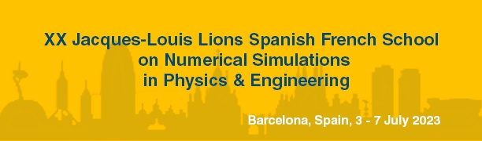
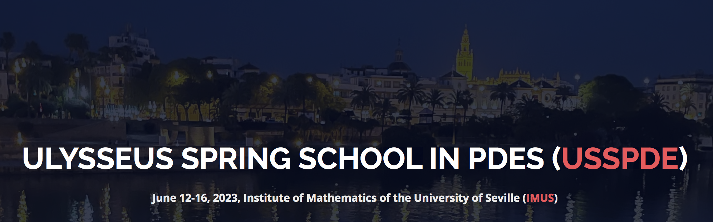
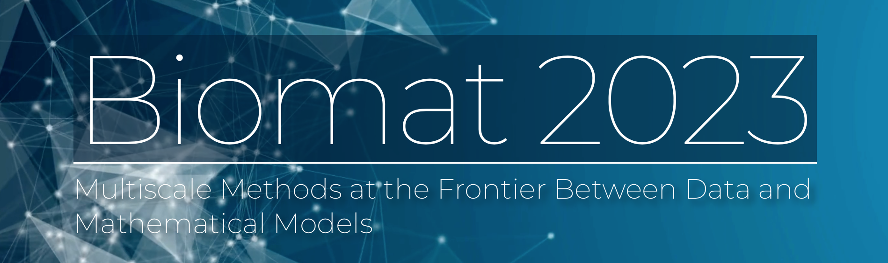
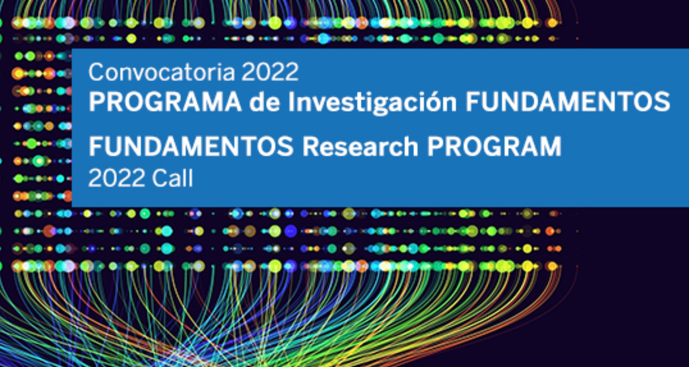
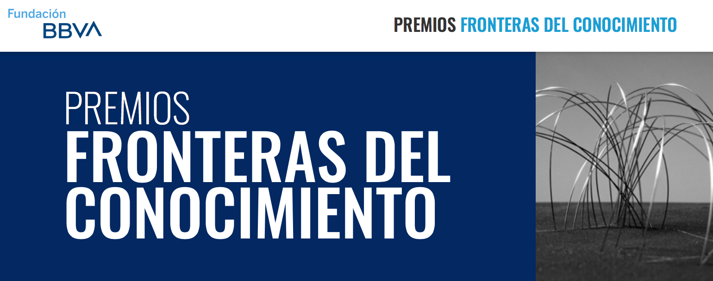
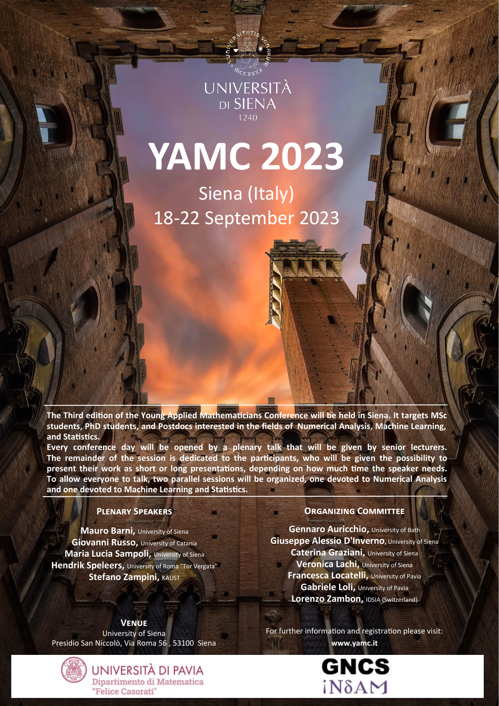
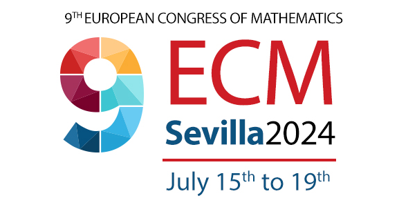
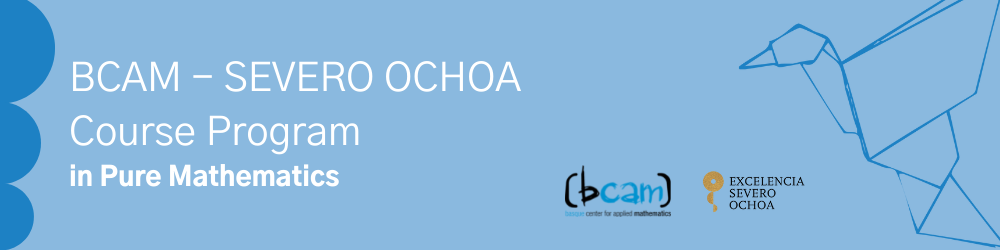

Comité Organizador Local
https://ehf-jll-2023.cimne.com/

_________________________________
La próxima Escuela Jacques-Louis Lions Hispano Francesa sobre Simulación Numérica en Física e Ingeniería se celebrará en Barcelona. En esta ocasión, la sede de la XX EHF será las instalaciones del Campus Norte de la Universitat Politècnica de Catalunya en Barcelona, que nos cede parte de sus instalaciones durante toda la semana.
La XX EHF gira alrededor del tema «Mathematical and Computational Modelling Across the Scales» y cuenta con cuatro cursos y tres charlas plenarias, además de la sesión de pósters.
En esta edición, los cuatro cursos seleccionados por el comité científico son los siguientes:
Hélène Barucq, Inria (Francia), que impartirá el curso «Advanced Numerical Methods for Probing Complex Objects» .
Jean-Bernard Bru, Ikerbasque, UPV/EHU, BCAM (España), que impartirá el curso «C*-Algebras and Mathematical Foundations of Quantum Statistical Mechanics» .
Ana Carpio, Universidad Complutense de Madrid (España), que impartirá el curso «Uncertainty Quantification in Scientific Computing» .
Aline Lefebvre-Lepot, CNRS, Ecole polytechnique (Francia) con el curso «From granular media to suspensions: taking contacts and close interactions into account» .
Las conferencias invitadas de esta edición son las siguientes:
Ludovic Chamoin, ENS Paris-Saclay, Institut Universitaire de France (Francia), que impartirá la conferencia titulada «Data assimilation and integration into simulation models» .
Laetitia Giraldi, Inria (Francia) que impartirá la conferencia titulada «Micro-swimmer’s Control: From a Computational Framework to the Optimization Process» .
Estefanía Peña, Universidad de Zaragoza (España), que impartirá la conferencia titulada «Mathematical and numerical modelling of the mechanobiology of the atheroma plaque» .
La información anterior, así como el horario provisional de la Escuela se encuentran disponibles en la web oficial de la Escuela o pulsando este enlace.
Como en ediciones anteriores, las actas de la escuela se publicarán en un volumen especial de la serie SEMA/SIMAI de Springer-Verlag.
La inscripción a la Escuela se realizará a través de la web oficial del evento, accesible en el siguiente enlace. No está previsto admitir inscripciones in situ.
El comité organizador local ha contactado con diferentes residencias situadas en la zona para facilitar el alojamiento de los participantes. Se puede encontrar información detallada en la web oficial de la escuela o pulsando en el siguiente enlace.
_____________________________________ ◇◇◇_____________________
Madrid, 12-16 junio, 2023
https://ilasic.org/
____________
Durante los días 12 al 16 de junio de 2023 tendrá lugar, en la Escuela Técnica Superior de Ingeniería de Montes, Forestal y del Medio Natural, de la Universidad Politécnica de Madrid, el encuentro ILAS2023. Se trata de la 25ª edición del congreso Conference of the International Linear Algebra Society, el congreso propio de la International Linear Algebra Society (ILAS).
ILAS es una sociedad internacional con más de 500 socios, dedicada a investigadores, profesionales y educadores interesados en el álgebra lineal y sus aplicaciones.
Desde 1989 organiza los encuentros ILAS Conferences, que pretenden promover la interacción de los miembros de la sociedad y de investigadores o profesores del ámbito del álgebra lineal y sus aplicaciones, mediante la presentación de trabajos de investigación recientes, e incluye varias ponencias plenarias de investigadores punteros en el ámbito del álgebra lineal y sus aplicaciones. Estos congresos se han celebrado ya en cuatro continentes (Norteamérica, Europa, Asia y Sudamérica), y esta es la segunda vez que tiene lugar en España (la primera vez fue en Barcelona, en 1999).
El congreso ILAS2023 contará con 10 conferenciantes plenarios: Carlos Beltrán (Universidad de Cantabria, España), Erin C. Carson (Charles University, República Checa), Stefan Güttel (University of Manchester, Reino Unido), Nicholas J. Higham (University of Manchester, Reino Unido), Elias Jarlebring (KHT Stockholm, Suecia), Shahla Nasserasr (Rochester Institute of Technology, Estados Unidos), Vanni Noferini (Aalto University, Finlandia), Rachel Quinlan (University of Galway, Irlanda), Michael Tait (Villanova University, Estados Unidos), y Cynthia Vinzant (University of Washington, Estados Unidos). Asimismo, habrá 31 sesiones especiales (5 de ellas invitadas), con un total de 310 contribuciones, y otras 134 «contributed talks» , lo que hace un total de 444 contribuciones.
Los temas de las contribuciones propuestas incluyen la teoría espectral de grafos, la conexión entre el álgebra lineal y multilineal y la teoría de la aproximación (incluyendo los polinomios ortogonales), el análisis y las aplicaciones de los modelos de reducción, la teoría de matrices racionales y sus aplicaciones, las aplicaciones del álgebra lineal a la optimización, la teoría de perturbaciones en matrices y operadores, las aplicaciones de la aproximación racional a la resolución de ecuaciones diferenciales, las álgebras de Jordan euclídeas, la resolución de ecuaciones matriciales y tensoriales, las aplicaciones del álgebra lineal y multilineal en la computación a exaescala y en la computación cuántica, o el análisis y aplicaciones de matrices estructuradas.
El congreso ha recibido financiación o ayuda de las siguientes entidades: Comunidad de Madrid, Elsevier, ILAS, Instituto de Matemática Interdisciplinar (UCM), SEMA, Taylor and Francis, Universidad Complutense, Universidad de Alcalá, Universidad Nacional de Educación a Distancia y University of Saint Louis.
Para más información se puede consultar la página web del congreso:
https://ilas2023.es/.
______________ ◇◇◇_____________________
Seville, June 12-16, 2023
https://departamento.us.es/edan/USSPDE23/

_________________________________
This is the second announcement on the Ulysseus Spring School in PDEs. This initiative will take place at the Instituto de Matemáticas de la Universidad de Sevilla from June 12th to June 16th, 2023. It aims at gathering international, top-level, researchers working on the field, in the frame of the Ulysseus Partner Universities program.
The registration is free but mandatory. The organization aims at providing the audience the documentation of the conference, coffee breaks and lunches during the five days.
Registration deadline is June 6, 2023. In order to register, you must send an email to acti2-imus@us.es, including all the following information: full name, professional address, institution, passport or ID number. Please, fix as email subject the following: ULYSSEUS SPRING SCHOOL IN PDE’s.
The School will have four mini-courses, nine invited talks, a poster session and a Roundtable. You may find more information about the activities below.
Juan Casado Díaz (US-Spain) and Faustino Maestre (US-Spain) - Optimal design through the homogenization theory (2 lectures).
Francisco Guillén-González (US-Spain) and María Ángeles Rodríguez-Bellido (US-Spain) - Mathematical modelling and numerical analysis in chemotaxis (2 lectures).
Florence Marcotte (UCA-France) - Introduction to geophysical fluid dynamics (2 lectures).
Simona Rota-Nodari (UCA-France) - Introduction to nonlinear dispersive equations (2 lectures).
Jean-Baptiste Caillau (UCA-France) - Optimisation of Sturm-Liouville determinants.
Yves D’Angelo (UCA-France) - DREAMS: an interdisciplinary project. Dynamics of Random ExpAnding MultiScale networks.
Enrique Delgado Ávila (US-Spain) - An overview on Reduced Order for Large Eddy Simulation turbulence models.
Alessandro Felisi (UNIGE-Italy) - Full discretization and regularization for the Calderón problem.
Enrique Fernández-Cara (US-Spain) - On theoretical and numerical control and inverse problems.
Stéphane Junca (UCA-France) - Fractional BV spaces for hyperbolic conservation laws.
José A. Langa Rosado (US-Spain) - Structural stability of infinite-dimensional dynamical systems. Some applications to real phenomena.
Laurent Monasse (UCA-France) - Fisher/KPP models with memory for fungal growth and their numerical simulation.
Cristian Morales-Rodrigo (US-Spain) - Nonlocal and Interface problems.
Participants in the School are encouraged to show some of their on-going work, by presenting a poster. Authors willing to do so should send a .pdf and .tex file to desouza@us.es including an abstract of their contributions, with no more than one page, by May 26, 2023. The Scientific Committee will take a decision on the proposal acceptations before June 2, 2023.
The main goal will be to present and describe some possibilities of cooperation, opportunities for students and future collaborations between researchers of partner universities in the frame of European University Ulysseus.
Available on the website of the event https://departamento.us.es/edan/USSPDE23/.
If you have questions, just send a message to angeles@us.es or cara@us.es.
The Organizing Committee
___________ ◇◇◇_____________________
Barcelona, June 12-16, 2023
https://www.crm.cat/biomat_2023/
_____________________________________

We would like to bring to your attention about the BIOMAT-2023 School Multiscale Methods at the Frontier Between Data and Mathematical Models organized by Tomás Alarcón, Juan Calvo, David Poyato and Juan Soler.
_____________________________________ ◇◇◇_____________________

El Programa de Investigación Fundamentos está destinado a proyectos exploratorios que aborden de manera innovadora cuestiones centrales o fundacionales de un campo científico o disciplinar en su estadio actual de desarrollo, o cuestiones del mismo carácter fundamental resultado de la intersección de varias disciplinas.
El objeto de la convocatoria es la concesión de ayudas económicas para el desarrollo de proyectos de investigación de fundamentos de una o más de las siguientes áreas del conocimiento:
Física, Química;
Matemáticas, Estadística, Ciencias de la Computación, Inteligencia Artificial;
Biología y Biomedicina;
Ciencias del Medio Ambiente;
Ciencias Sociales (Economía, Psicología, Ciencia Política, Sociología, Ciencias Jurídicas, Antropología Cultural y Social, Lingüística).
El Programa Fundamentos está abierto a proyectos liderados por hasta tres investigadores principales de una o más disciplinas, pudiendo incorporar también investigadores adscritos a centros de cualquier otro país.
Se concederá un máximo de 5 ayudas con un importe bruto máximo de 600.000 euros por proyecto. El plazo máximo de ejecución de los proyectos seleccionados será de tres años.
El plazo de presentación de solicitudes está abierto hasta el 30 de mayo de 2023.
Más información en la web de la Fundación BBVA.
_____________________________________ ◇◇◇_____________________

Los Premios Fundación BBVA Fronteras del Conocimiento reconocen e incentivan la investigación y creación cultural de excelencia, en especial contribuciones de singular impacto por su originalidad y significado.
Las disciplinas y dominios de los Premios Fronteras del Conocimiento son los siguientes:
Ciencias Básicas (Física, Química, Matemáticas)
Biología y Biomedicina
Tecnologías de la Información y la Comunicación
Ecología y Biología de la Conservación
Cambio Climático
Economía, Finanzas y Gestión de Empresas
Humanidades y Ciencias Sociales
Música y Ópera
Dotación: La dotación de los Premios Fundación BBVA Fronteras del Conocimiento es de 400.000 €, un diploma y un símbolo artístico, en cada una de las ocho categorías.
Candidatos: Una o más personas u organizaciones que hayan realizado aportaciones independientes o convergentes a un determinado avance en los ámbitos del conocimiento científico o la creación cultural.
Nominación: Todas las nominaciones serán indirectas, a través de cualquier persona experta en las categorías de concurrencia, así como a través de organizaciones o instituciones científicas o culturales.
Fecha de cierre de la convocatoria: 30 de junio de 2023.
Más información a través del siguiente enlace.
_____________________________________ ◇◇◇_____________________
Cádiz, 5-7 julio, 2023
https://xiiieamd.uca.es
_______
El XIII Encuentro Andaluz de Matemática Discreta se celebrará en la ciudad de Cádiz, en la Facultad de Ciencias Económicas y Empresariales, entre los días 5 y 7 de julio de 2023, organizado por los departamentos de Matemática, y de Estadística e Investigación Operativa, de la Universidad de Cádiz.
En esta oportunidad celebraremos la decimotercera edición del Encuentro Andaluz que se viene desarrollando cada dos años, ininterrumpidamente, desde que comenzaron su andadura en 1999, con algunos desajustes en las fechas provocados por la pandemia de la covid-19.
El Comité Organizador espera poder contar con la participación en el XIII EAMD de los investigadores que forman parte de esta gran familia y, por supuesto, con todos aquellos nuevos participantes que se sientan atraídos por la temática del evento.
Todos los investigadores que deseen participar de manera activa en el evento quedan invitados a realizar el registro de participación y a enviar sus trabajos a la dirección electrónica 13eamd@uca.es de la organización del encuentro.
Las áreas en las que pueden enmarcarse los trabajos a presentar, aunque no necesariamente se restringirán a éstas, incluyen las siguientes:
Algoritmos y estructuras de datos.
Geometría discreta y combinatoria.
Teoría de grafos.
Aplicaciones de la matemática discreta.
Combinatoria.
Toda la información relativa al lugar de celebración, fechas de interés, conferenciantes invitados, programa de charlas, envío y formato de las comunicaciones, etc., se encuentra en la web del encuentro: https://xiiieamd.uca.es/.
En relación al alojamiento, y debido a la alta demanda de alojamiento por esas fechas en la ciudad de Cádiz, se recomienda el Colegio Mayor Universitario de la UCA, que cuenta con magníficas instalaciones y con precios bastante asequibles. Para contactar con el Colegio se puede utilizar el siguiente enlace: https://colegiomayor.uca.es/alojamiento-temporal/#.
Pilar Álvarez Ruiz,
Ismael González Yero,
Juan Carlos Valenzuela Tripodoro,
Dorota Kuziak,
Abel Cabrera.
_____________________________________ ◇◇◇_____________________
Naples, September 7-9, 2023
_________
The aim of the workshop is to present and discuss recent results concerning mathematical models of structures with one or two vanishing dimensions, such as thin films, plates, shells, beams, capillary vessels, networks, etc.
Registration is free, but mandatory. Due to the size of the conference room, the number of participants will be limited.
A specific session will be dedicated to the presentation of posters.
The workshop will be held at the hermitage “Eremo dei Camaldoli”, via dell’Eremo 87, 80131 Napoli, Italy.
Information on accommodation and meals can be found on the web page.
On behalf of the Organizing Committee: Giuseppe Cardone, Umberto De Maio, Luisa Faella, Nicola Fusco, Giuliano Gargiulo, Antonio Gaudiello, François Murat, Carmen Perugia, Elvira Zappale.
_____________________________________ ◇◇◇_____________________
Siena, September 18-22, 2023
________
The conference aims to gather young researchers (PhD students and postdocs) working in the fields of Numerical Analysis, Numerical Modelling, Statistics, and Machine Learning.
The event will be held between the 18th and the 22nd of September 2023 in Siena (SI), Italy.
Every conference day will be opened by a plenary talk that will be given by senior lecturers. The remainder of the session is dedicated to the participants, who are strongly encouraged to present their research projects or activities. To allow everyone to talk, two parallel sessions will be organized, one devoted to Numerical Analysis and Numerical Modelling and one devoted to Machine Learning and Statistics.
For further details, please visit the website (which is continuously being updated):
For anyone interested in taking part in this conference, this is the link for the application form:
| Early application closing date | 13th May |
| Notification of acceptance | 16th May |
| Early registration opening date | 17th May |
| Early registration closing date | 9th June |
Please keep in mind that we have limited spots. It will still be possible to apply after the early registration closes until all the spots are filled.
To participate you will be required to pay a fee, which will help us to cover the expenses for the social events.
For any questions, please contact us at info@yamc.it.
The organizers: G. Auricchio, G. A. D’Inverno, C. Graziani, V. Lachi, F. Locatelli, G. Loli, L. Zambon.

_________________________________ ◇◇◇_____________________
Santiago de Compostela, Spain, July 3-5, 2023
https://egc23.web.uah.es/
____
We cordially invite you to join the XX Spanish Meeting on Computational Geometry (EGC’23) which will take place from July 3 to 5, 2023, at Universidade de Santiago de Compostela, Santiago de Compostela, Spain. The core of this international conference is composed by the most current issues in the field of Discrete and Computational Geometry, both in its theoretical and applied aspects. The EGC began in 1990. The expected participation includes undergraduates, master students or doctoral students, researchers from the area or from closer disciplines, and professionals from companies and institutions whose work involves the use of geometric algorithms.
Topics include, but are not limited to: geometric algorithms and data structures; discrete and combinatorial geometry and topology; theoretical foundations of computational geometry; questions of interest in the implementation of geometric algorithms and geometric software development; applications of computational geometry, and closely related areas, such as computer graphics, virtual reality, robotics, computer vision, simulation and visualization, solid modelling, computer aided design and manufacturing, pattern recognition, graph drawing and circuit layout, image processing, geographic information science, multimedia and animation, wireless communications, computer algebra, computational topology, statistical analysis, operations research, computational biology, etc.
The language of the conference is English, hence all international colleagues are welcome to join.
Ruy Fabila-Monroy, Cinvestav.
Antonio Gómez Tato, Universidade de Santiago de Compostela.
Christiane Schmidt, Linköping University.
Paper submissions: Each paper submission should consist of an extended abstract of up to 4 pages of original research. Authors are encouraged to add an appendix with additional details, or even a full version of the paper, which will be reviewed by the program committee at their discretion to verify claims whose proofs do not fit in the 4-page abstract.
Papers that have recently been submitted to journals or other conferences are eligible for submission to EGC, assuming that it is allowed by those venues and they have not been published by the time of the conference.
Talk submissions: Each talk submission should consist of an abstract of 1 page describing original research presented in the proposed talk. This may involve ongoing research or a result published recently (with the first publication dated in 2022 or later). If the work has appeared previously, please provide a reference to the publication.
Abstracts of accepted papers and talks will be collected in a booklet that will be accessible from the conference website. Presentations of accepted papers and talks will be allocated the same amount of time in the program (approximately 15-25 minutes).
All submissions (of both papers and talks) will be reviewed by the program committee in order to guarantee that they are in scope and meet quality standards.
Submission instructions will be available at the paper submission section on the conference website https://egc23.web.uah.es/.
Authors of accepted submissions are expected to present their work at the conference. Failure to do so will result in removal of the contribution from the abstract booklet and conference website.
We are looking forward to seeing you in Santiago de Compostela, and we hope that you will feel encouraged to participate.
Best regards,
The Organizing comittee
_____________ ◇◇◇_____________________
Sevilla, 15-19 Julio, 2024
https://ecm2024sevilla.com
___

El próximo Congreso Europeo de Matemáticas se celebrará en Sevilla, del 15 al 19 de julio de 2024. La consecución de este congreso supone un éxito de la comunidad matemática española, gracias al cual España será durante esa semana del verano de 2024 el centro de la investigación matemática europea más avanzada.
Las sociedades matemáticas españolas que forman parte de la Sociedad Matemática Europea (RSME, SEMA, SEIO, SCM) respaldan este congreso y colaboran en su organización, para conseguir que sea un éxito común de todos los que pretendemos impulsar las Matemáticas, desde todos los puntos de vista, y su transmisión a la sociedad.
Desde el Comité Organizador del 9ECM queremos animar a todos los matemáticos españoles a participar en este evento excepcional. No solo presencialmente en julio de 2024, sino como organizador de un evento satélite o de un minisimposio.
La convocatoria de eventos satélites está abierta. Os animamos a participar organizando un evento satélite del 9ECM en vuestra Universidad, aprovechando la gran cantidad de investigadores de primer nivel que visitarán nuestro país en fechas próximas al congreso.
En breve publicaremos la convocatoria de organización de minisimposios: sesiones temáticas dentro del 9ECM que harán más atractivo el congreso para los especialistas de tu área de investigación. Os mantendremos informados.
Agradecemos de antemano tu apoyo, y estamos a tu disposición en
ecm2024sevilla@us.es
para aclarar cualquier duda que puedas tener.
Seguiremos en contacto. Un cordial saludo, en nombre del comité organizador.
| Juan González-Meneses |
| Presidente del comité organizador del 9ECM |
_____________________________________ ◇◇◇_____________________
La Universidad Autónoma anuncia diversas convocatorias de becas 23/24 para cursar el Máster en Matemáticas y Aplicaciones, UAM. Se sufragan los gastos de matrícula y una remuneración de 1.000 € durante 10 meses. Se podrá consultar la información detallada en la página web
| Carlos Mora |
| Coordinador del Máster en Matemáticas y Aplicaciones |
| Departamento de Matemáticas |
| Universidad Autónoma de Madrid |
_____________________________________ ◇◇◇_____________________

Workshop: BIDAS 5: FIFTH BILBAO DATA SCIENCE WORKSHOP. Bilbao, June 8-9, 2023.
Speakers
Jesse Read, École Polytechnique (France).
Dae-Jin Lee, IE University (España).
Alicia Troncoso, Universidad de Pablo Olavide (España).
María José del Jesus, Universidad de Jaén (España).
Dolores Romero Morales, Copenhagen Business School (Dinamarca).
Emilio Carrizosa, Universidad de Sevilla (España).
Manuel Gomez Rodriguez, Max Planck Institute for Software Systems
(Germany).
Jerónimo Hernández-González, Universidad de Barcelona (España).
María Dolores Ugarte, Universidad Pública de Navarra (España).
Rosa Elvira Lillo, Universidad Carlos III de Madrid (España).
María Xosé (Coté) Rodríguez, Universidad de Vigo (España).
Jean-Michel Loubes, Universidad de Toulouse (Francia).
Eustasio del Barrio, Universidad de Valladolid (España).
José Ramón Berrendero, Universidad Autónoma de Madrid (España).
Annalisa Appice, University of Bari Aldo Moro (Italy).
Workshop: 5TH BCAM-UPV/EHU SUMMER SCHOOL ON HARMONIC
ANALYSIS AND PDES: SPHERE PACKING
June 19-23, 2023.
ABSTRACT: The theme of the summer school is sphere packing, and the meeting will take place at BCAM-Basque Center for Applied Mathematics, Mazarredo 14, Bilbao, Basque Country, Spain and at University of Basque Country (UPV/EHU), Department of Mathematics.
Invited speakers: Felipe Gonçalves, Philippe Moustrou y Danylo Radchenko.